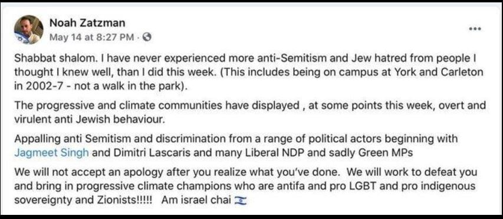
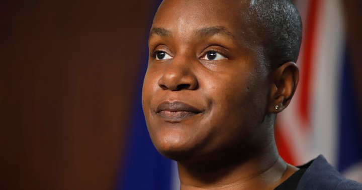
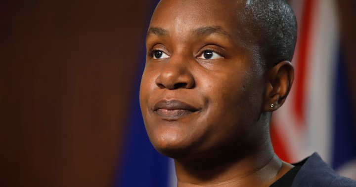
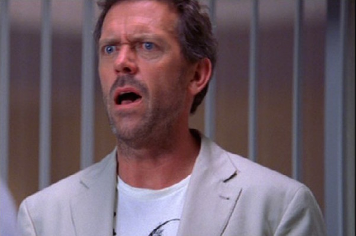
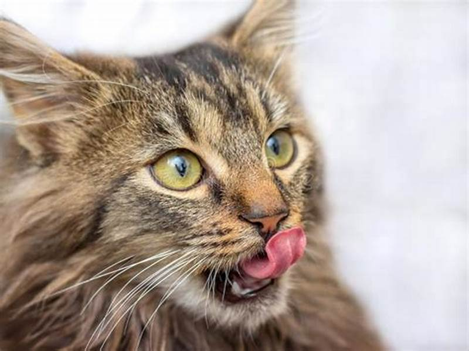
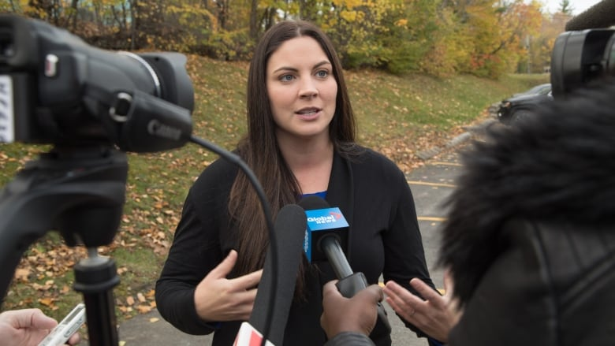
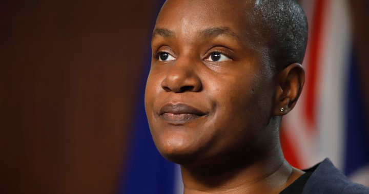

Green Party Leader Faces No Confidence Vote Over Being a Jew Nationalist Ethnic Cleansing Apologist
July 2nd, 2021
CJN:
TDC_ARTICLE_START
Green Party Leader Annamie Paul will face a vote of non-confidence for failing to disavow remarks about Israel and anti-Semitism by a former aide.
The party’s governing body, the federal council, will vote on July 20 on a motion of non-confidence, according to a letter read at a members’ town hall by interim party president Liana Cusmano.
According to the CBC, the letter says the party’s federal council is moving to sanction Paul for “failing to openly condemn the actions of Noah Zatzman.”
Zatzman earlier criticized unnamed MPs, including from the Greens, for their “appalling” anti-Semitism and vowed they would be defeated in the next election by those who support Zionism.
TDC_ARTICLE_STOP
Noah Zatzman
No, I really need to stop here and explain this (((Noah Zatzman))) character. Actually, let me show this screencap.

I mean, this is a level of kikery that shouldn't even be possible. He's a "progressive climate champion antifa pro LGBT pro indigenous sovereignty and Zionist." I mean I can't even. This is basically Der Jude in his pure form. Where he supports explicitly anti-White hate groups like antifa, and is pro-ethnic cleansing of Whitey, which is what "muh indigenous sovereignty," but also he's a jew nationalist who supports violent racial cleansing of those filthy Palestinian Goy Cattle.
I guess he doesn't support sovereignty for the Indigenous People of Israel.
 I do think it's nice to see more people who are explicitly jew nationalist antifa members. Really destroys both Israel and Antifa to be seen with each other.
TDC_ARTICLE_START
On June 15, members of the federal council issued an ultimatum to Paul not only to disavow Zatzman’s comments but to reaffirm her support for the party’s two MPs at a news conference, or face a confidence vote on July 20.
Some confusion then arose when Paul told the Globe and Mail that she no longer had to follow through on the order to disavow Zatzman’s remarks. The next day, the federal council said Paul was still bound by the demand.
The federal council met on June 29. In an email to The CJN, party spokesperson Rosie Emery said the council’s meetings and business are “strictly confidential. If the council releases a statement, then we would share it with the media.”
TDC_ARTICLE_STOP

I do think it's nice to see more people who are explicitly jew nationalist antifa members. Really destroys both Israel and Antifa to be seen with each other.
TDC_ARTICLE_START
On June 15, members of the federal council issued an ultimatum to Paul not only to disavow Zatzman’s comments but to reaffirm her support for the party’s two MPs at a news conference, or face a confidence vote on July 20.
Some confusion then arose when Paul told the Globe and Mail that she no longer had to follow through on the order to disavow Zatzman’s remarks. The next day, the federal council said Paul was still bound by the demand.
The federal council met on June 29. In an email to The CJN, party spokesperson Rosie Emery said the council’s meetings and business are “strictly confidential. If the council releases a statement, then we would share it with the media.”
TDC_ARTICLE_STOP
Green Party Leader Annamie Paul
Yeah I don't care enough to know what the outcome of the vote will be. They need 75% of the council to vote against Annamie, which, reading between the lines, seems plausible, but unlikely. However, it's pretty hilarious that the Green Party, is also a jew nationalist ethnic cleansing apologizing party. How odd.
TDC_ARTICLE_START
Zatzman issued a statement calling the most recent action “further evidence of an organization whose leadership fosters a culture of systemic anti-Semitism and discrimination.”
TDC_ARTICLE_STOP

I mean I swear to god. This guy is just unbelievable. "You're mad about a violent racial cleansing done by jews. We're GOD'S CHOSEN PEOPLE YOU FUCKING GOY!"
TDC_ARTICLE_START
The development marks the latest round of internal strife that climaxed when Green MP Jenica Atwin crossed the floor to the Liberals earlier this month over disagreements with Paul on the Israel-Hamas conflict and other issues.
In a joint statement following Atwin’s defection, the Green Party’s two remaining MPs, Paul Manly and Elizabeth May, said they were “heartbroken” by her departure and they blamed Zatzman.
TDC_ARTICLE_STOP

Pic unrelated, I just wanted to use it.
The Liberals are just as bad as the Greens, so this wasn't really about any specific policy. Jenica Atwin basically just said "yeah there's backstabbing catfights going on aplenty over in the shitshow known as the green party, so I'm getting the fuck out." Which is pretty hilarious, to be completely honest. Well not quite.
CBC:
TDC_ARTICLE_START
Atwin's departure comes after the Israeli-Palestinian conflict exposed fault lines in the Green party ranks.
Atwin directly challenged Paul's position on the conflict, saying Paul's call for de-escalation and a return to dialogue between the two was "totally inadequate."
"I stand with Palestine and condemn the unthinkable airstrikes in Gaza. End Apartheid!" Atwin tweeted on May 11.
TDC_ARTICLE_STOP
Jenica Atwin
She's an opportunist and a striver, but at least her comments were better than 100% of the political party leaders in this country.
I do think it's nice to see more people who are explicitly jew nationalist antifa members. Really destroys both Israel and Antifa to be seen with each other.
TDC_ARTICLE_START
On June 15, members of the federal council issued an ultimatum to Paul not only to disavow Zatzman’s comments but to reaffirm her support for the party’s two MPs at a news conference, or face a confidence vote on July 20.
Some confusion then arose when Paul told the Globe and Mail that she no longer had to follow through on the order to disavow Zatzman’s remarks. The next day, the federal council said Paul was still bound by the demand.
The federal council met on June 29. In an email to The CJN, party spokesperson Rosie Emery said the council’s meetings and business are “strictly confidential. If the council releases a statement, then we would share it with the media.”
TDC_ARTICLE_STOP
